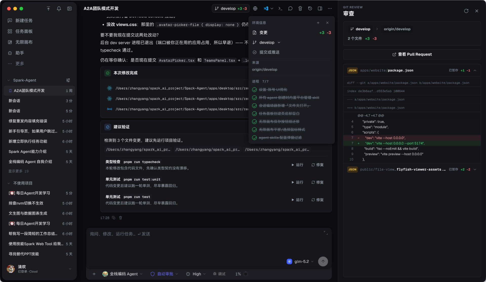
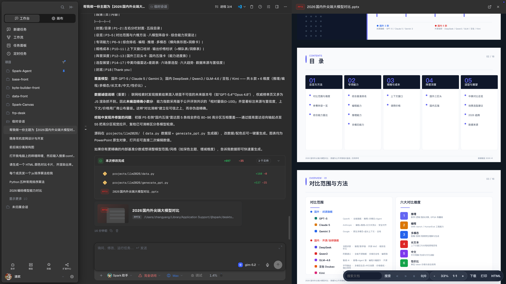
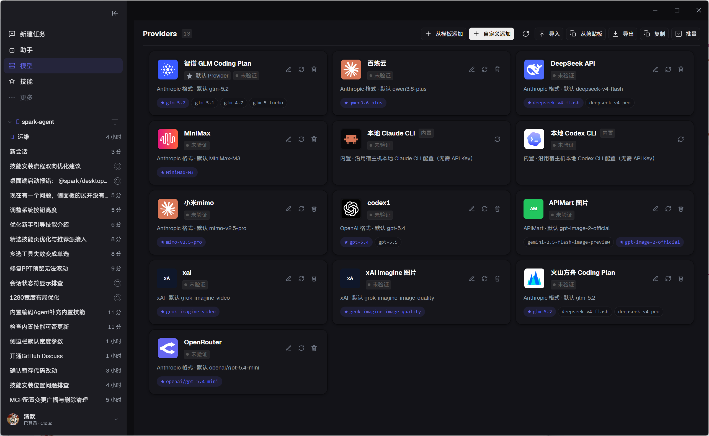
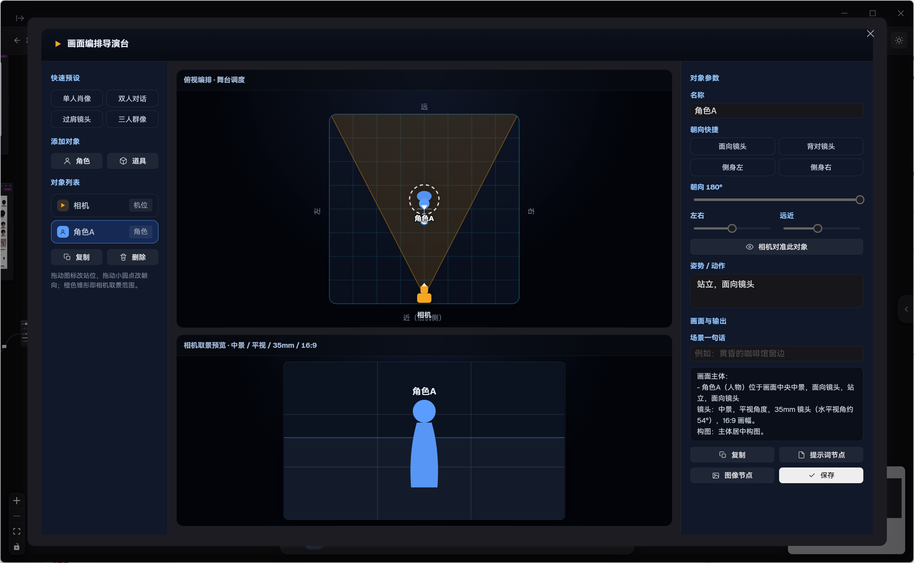

新版本、干净演示项目、窗口壳、无私人路径。
必须重拍01 / WORKBENCH
00:24 — 02:28
00:24 — 02:28
让任务
真的被推进。
工作台段落不展示所有按钮，而是用一条任务路径，把特色功能串起来：任务输入 → 工具执行 → Agent 协同 → 工作流 → 记忆 → 定时。
W-01 / WORKBENCH
画面
真实工作台全景，轻微推入；侧面板局部放大。
字幕
目标、执行、验证、结果，在同一个项目里。
动画
一条细线从会话连接到终端、Review 和产物。
展开这一章的镜头节奏
00:24 工作台总览；00:42 功能侧面板；01:00 内置终端 / 搜索 / 浏览器 / 媒体工具；01:18 Host → Member 协同；01:38 工作流编排；02:00 后台记忆抽取；02:14 会话级 / 全局双层定时任务。每个功能只留下一个关键动作，后续分别做教学视频。
01.1 / THE PATH
不是功能列表，
是一条路径。
用 Remotion 把真实录屏中的关键状态提炼成一条极简路径。观众读的是关系，不是按钮名称。
01 / INPUT提出目标
进入项目上下文
进入项目上下文
02 / EXECUTE工具与 Agent
开始行动
开始行动
03 / VERIFY审批、测试、审查
看见改动
看见改动
04 / KEEP记忆、任务、产物
留下来继续用
留下来继续用
声音
键盘、终端、一次审批 click。
色彩
工作台只用黑、白、青。
后续
可拆成工作流教学片。
功能最后，
变成什么？
首支视频中间加入一段案例蒙太奇。它不教操作，只让观众看到 Spark Agent 的能力如何落到具体结果里。每个案例 5–8 秒，后续再各自拆成教学视频。
CASE 01 · 00:42 / WORKBENCH
开发
代码
把一个真实问题交给 Agent：读项目、改代码、跑验证、查看 Diff，再决定是否接受。
真实项目终端验证Git ReviewCheckpoint
一句字幕：让 AI 改得动，也审得住。

CASE 02 · 01:08 / DELIVERY
做一份
PPT
从一句主题或一份资料开始，生成结构、页面和可交付的演示文稿；继续导出 PPTX、DOCX 或网页。
主题输入结构生成HTML SlidesPPTX / DOCX
一句字幕：从想法，到能拿去讲的页面。

CASE 03 · 04:10 / CANVAS VIDEO LAB
复刻
一个视频
把参考视频放进画布，拆出镜头、节奏和关键帧，再进入深度转换、视频编辑和新的生成任务。
ReferenceShot SplitKeyframesRebuild
一句字幕：不是复制文件，而是拆出可继续创作的结构。
OUTPUT / REFERENCE → REBUILD
CASE 04 · 03:26 / FILM WORKFLOW
小说
到短剧
把长文本变成角色、场景、故事板和镜头描述，再交给导演台和生成节点继续推进。
NovelCharactersScenesStoryboardShots
一句字幕：从一段故事，到一组可以拍的镜头。
他推开门。
房间里没有灯。
桌上只留下一台相机。
房间里没有灯。
桌上只留下一台相机。
CASE REEL / 4 个结果瞬间后续：每个案例独立成为一条教学视频 →
02 / CANVAS
02:28 — 04:48
02:28 — 04:48
让创作
有上下文。
画布段落使用更宽的留白和更慢的镜头运动。真实截图负责证明能力，虚拟节点动画负责解释创作关系。

C-01 / CANVAS画面
画布全景、资产中心、节点血缘；真实截图做主画面。
字幕
剧本、角色、场景、镜头和结果，继续派生。
动画
连线先出现，节点后出现；强调关系。
展开这一章的镜头节奏
02:28 工作台连线变成画布网格；02:42 画布与资产中心；03:00 快速整理与组节点折叠；03:13 Provider 多渠道本地配置（火山 / 百炼等只展示渠道与配置，不在首片承诺免费额度）；03:26 角色身份板、故事板、场景提取；03:42 3D 导演台；03:58 场景 360°；04:10 深度视频、视频编辑、关键帧；04:25 画布 Agent、动态模型 / Skill；04:37 画布工作流提取。
02.1 / FILM TOOLS
从故事，
到镜头。
影视工具不用做成复杂的功能墙。把它们像电影片头一样，一个一个出现，再让它们进入真实的画布。
CHARACTER角色身份板
STORYBOARD故事板
SCENE场景提取
SHOT镜头描述
VIRTUAL CANVAS / STORY → SHOT实拍
角色库、故事板、场景提取菜单。
生成
节点关系图与镜头卡片。
转场
用一条线从角色连到镜头。
02.2 / DIRECTOR
先设计镜头，
再生成画面。
3D 导演台、360° 场景和视频时间线不靠炫技。它们共同证明：画布不只是图片生成入口，而是一个能组织镜头的工作台。

C-04 / DIRECTOR STAGE镜头 1
角色、相机、构图同时变化。
镜头 2
360° 场景拖动一圈。
镜头 3
视频时间线切出关键帧。
展开制作备注
真实素材：director-stage.png、panorama-360.png，以及 VideoWorkbench 实机录屏。Remotion 只负责相机框、playhead、关键帧卡片与字幕，不重绘产品本身。
02.3 / CANVAS AGENT
一句话，
画布开始行动。
结尾用画布 Agent 收束画布段落：动态选择模型，加载 Skill，拆任务、建节点、继续派生。
AGENT分析画布
MODEL / SKILL动态加载
OUTPUT生成节点
CANVAS AGENT / PROMPT → NODES输入
“把这个角色拆成三种镜头。”
过程
模型与 Skill 标签动态切换。
结果
节点被创建并连回画布。